Last modified
한눈에 보기
1분 시연 영상
- 팀은 카메라 없이 협동로봇의 힘 센서와 그리퍼의 접점 신호(물체를 잡았는지 알려 주는 신호)만으로 원두 계량부터 서빙까지 5단계 핸드드립 공정을 자동화해 최종 시연까지 이었습니다.
- 5인 팀에서 그리퍼 파지 판정과 예외 처리를 맡았고(실제 작업은 경계가 겹치는 공동작업), 작업 환경 도면을 그렸습니다.
무엇을 만들었나
카메라 없이 이어지는 5단계 공정

팀은 카메라 없이 교시 좌표(로봇에 미리 가르쳐 저장한 위치)와 힘·접점 신호만으로 원두 계량, 분쇄, 필터 투입, 나선 드립, 서빙을 하나의 공정으로 이었습니다.
작업자가 컨트롤박스(로봇 제어기)의 버튼으로 원두를 고르면 로봇이 스푼으로 원두를 떠 그라인더(원두 분쇄기)에 넣고, 그라인더 손잡이를 잡아 돌려 원두를 갑니다. 진행 상황은 팀이 만든 웹 화면에 단계별로 표시됩니다.
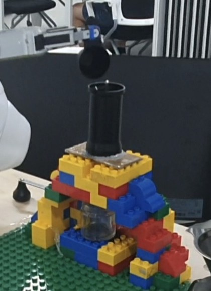
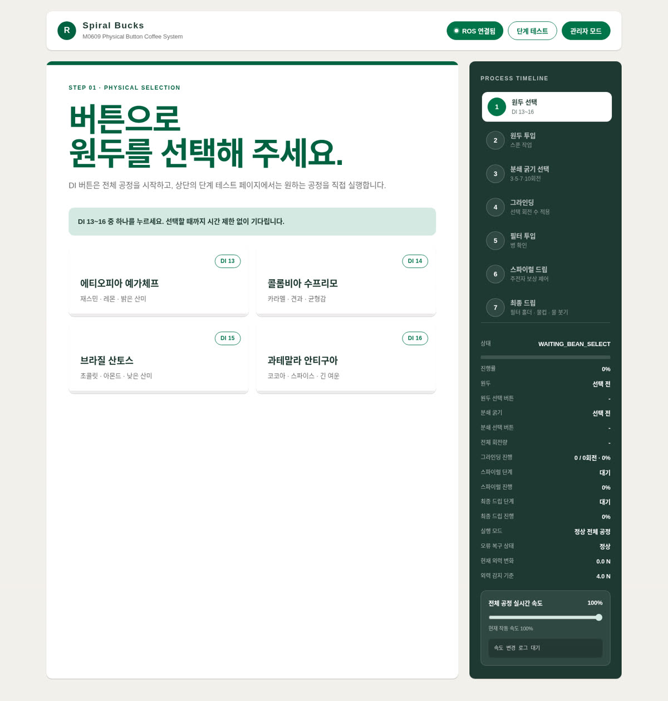
팀은 나선 이동과 주전자 기울임을 하나의 연속 동작으로 묶어 로봇이 같은 나선 궤적으로 물을 붓게 했습니다.
진행 과정
트레이 밸런싱에서 핸드드립으로 주제 변경
팀은 쟁반 위 컵의 무게중심을 유지하는 트레이 밸런싱을 사흘간 검증한 뒤, 주어진 장비와 기간으로는 힘 변화를 해석하고 나눠 측정하기 어렵다고 판단해 핸드드립 커피 자동화로 주제를 바꿨습니다.
트레이 밸런싱 사흘간 검증
과정에서 주어진 과제는 ROS 2를 활용한 로봇 자동화 공정 구현이었습니다. 팀은 먼저 트레이 밸런싱을 6일차부터 사흘간 검증했고, 저도 가능성을 검증하는 코드를 직접 짰습니다.
해석·측정하지 못한 힘과 무게중심
하지만 긴 그리퍼와 무거운 쟁반이 이어진 구조에서 쟁반을 기울일 때 힘 계산값이 달라지는 이유를 해석하지 못했고, 그리퍼·쟁반·물체의 무게와 무게중심 변화를 나누어 측정하지도 못했습니다. 힘 감지 원리와 관성을 다룰 이론적 배경이 부족하고 기간도 짧아, 확신 없이 추가 센서를 붙여 보완하기도 어려웠습니다.
카메라 없이 구현할 공정 후보 검토
이에 팀은 카메라 없이 구현할 수 있는 공정 후보들을 검토한 끝에, 실생활에 적용할 수 있고 다양한 단계를 다룰 수 있는 핸드드립 커피로 9일차에 팀의 최종 주제를 확정했습니다.
평가 기준 표현과 멘토 질문
급하게 정한 주제인 만큼 팀은 바꾼 주제를 평가 기준에 맞게 어떻게 표현하고 협동로봇을 어떻게 프로그래밍할지 멘토에게 물었고, 이후 접촉 감지와 물체 잡힘 판단, 나선 동작 구현으로 작업을 빠르게 이어 갔습니다.
이 경험을 통해 구현 목표가 주어진 하드웨어와 일정 안에서 실제로 측정하고 제어할 수 있는 범위인지, 작은 검증 코드로 먼저 짚어보고 방향을 결정해야 한다는 일하는 방식을 배웠습니다.
물체 잡힘 판정과 이상 감시
저는 그리퍼의 잡힘 신호가 들어오지 않을 때 손가락 위치와 힘으로 잡힘 여부를 대신 판정하게 하고, 그리퍼 신호가 끊기면 로봇 정지를 요청하는 이상 감시를 만들었습니다.
잡힘 신호가 뜨지 않는 경우
카메라가 없어 물체를 잡았는지는 그리퍼 신호로만 판단해야 했습니다. 특히 물체를 손가락 안쪽까지 깊게 물면 잡힘 신호가 뜨지 않았고, 이를 단순 실패로 읽으면 로봇이 물체를 문 채 다시 집으러 갈 위험이 있었습니다.
드라이버와 판정 신호
저는 RG2 그리퍼용 오픈소스 드라이버와 작동 원리를 보며 닫힐 때 하드웨어에서 힘을 측정할 것이라는 가설을 세웠고, 판정에 쓸 신호(잡힘 신호, 손가락 위치, 힘)를 찾았습니다.
손가락 위치와 힘으로 대체 판정
최종 제출본에서 저는 잡힘 신호를 먼저 확인하고, 그 신호 데이터가 들어오지 않으면 손가락 위치와 힘으로 대체 판정하도록 했습니다. 빈손이면 끝까지 닫히고 물체가 있으면 그 전에 멈춘다는 차이를 이용해 빈손 위치 실측값을 기준으로 삼았고, 프로젝트 중반쯤 실기에서 빈손일 때와 물체를 잡았을 때의 실측값으로 이 차이를 확인했습니다.
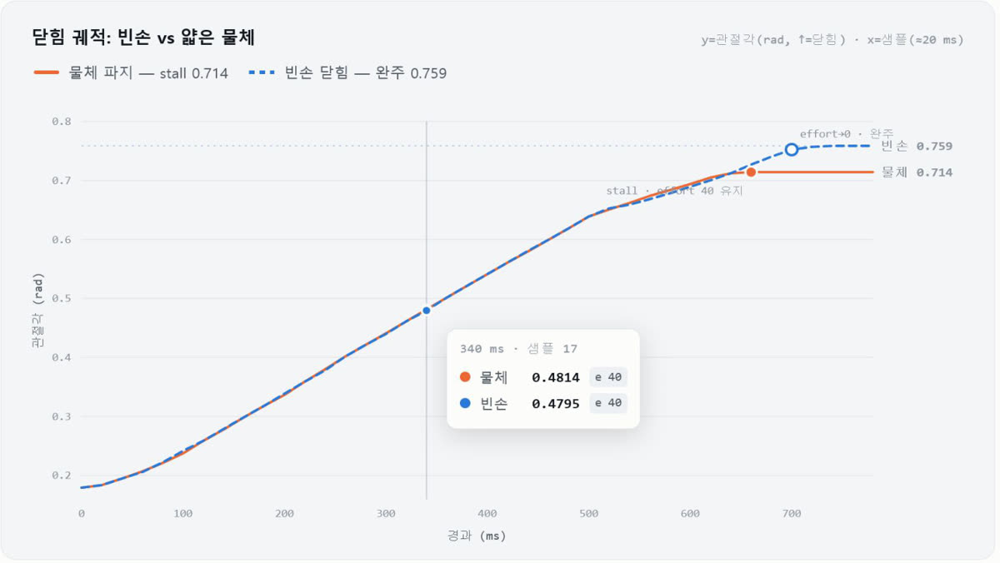
이동 명령을 한 곳에서 감싸기
최종 제출본에서는 그리퍼 신호가 1초 넘게 끊기면 로봇 정지를 요청하는 감시도 제가 맡았습니다. 이동 명령마다 확인 코드를 넣으면 빠뜨리는 곳이 생기고 신호가 끊긴 직후 다음 동작이 이어질 틈이 남는다고 보아, 로봇 이동 명령을 한 곳에서 감싸 앞뒤로 신호 이상을 확인하고 이상 감지 뒤에는 다음 이동 명령을 막게 했습니다.
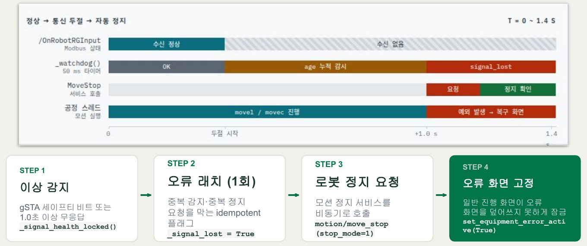
개발본의 판정 불가 구분
물체를 깊게 물어 잡힘 신호가 없는데도 접촉 흔적이 남은 경우는, 제출 뒤 이어 간 개발본에서 '판정 불가'로 따로 떼어 다시 집지 않고 사람이 확인하도록 했습니다.
이렇게 판정을 나눠 물체를 잡았는데도 실패로 잘못 읽는 경우(오탐)를 줄이려 했고, 조치가 필요할 때는 사람의 확인을 기다리게 했습니다. 실제 로봇 시험에서는 잡힘 판정이 기존처럼 동작했고 손가락 안쪽까지 깊게 물려 멈추는 경우를 따로 구분할 수 있게 되었으나, 이 실기 확인이 최종 제출본과 제출 뒤 이어 간 개발본 중 어느 쪽이었는지는 기록에 남아 있지 않습니다.
이 과정을 거치며 센서 신호로 상태를 판정할 때는 신호가 애매해지는 경우부터 정리하고, 로봇을 움직이기 전에 확인할 기준부터 세워야 한다는 점을 배웠습니다.
실패 단계 재실행과 복구 분리
저는 공정이 실패하면 전체를 처음부터 다시 시작하지 않고 실패한 단계만 다시 실행하도록 구조를 바꿨고, 현장 정리는 사람이 맡고 재시도 여부는 작업자가 컨트롤박스 버튼으로 정하게 나눴습니다.
초기에 공정 전체를 다시 시작
공정이 실패하면 초기에는 프로그램을 끝내거나 공정 전체를 다시 시작했습니다. 하지만 그러면 나선 드립처럼 15초 가까이 걸리는 단계와 이미 끝난 앞 단계를 모두 버려야 했고, 그렇다고 로봇이 무엇을 들고 있는지 모르는 상태에서 자동으로 복구하면 더 위험하다고 판단했습니다.
사람 책임으로 명시한 현장 정리
그래서 저는 현장 정리(그리퍼를 껐다가 다시 켜는 것처럼 사람이 직접 해야 하는 조치)를 사람 책임으로 명시해 재시도와 중단 판단을 자동화하지 않고 작업자가 컨트롤박스 버튼으로 결정하게 했으며, 실패한 단계만 처음부터 다시 실행하도록 구조를 바꿨습니다.
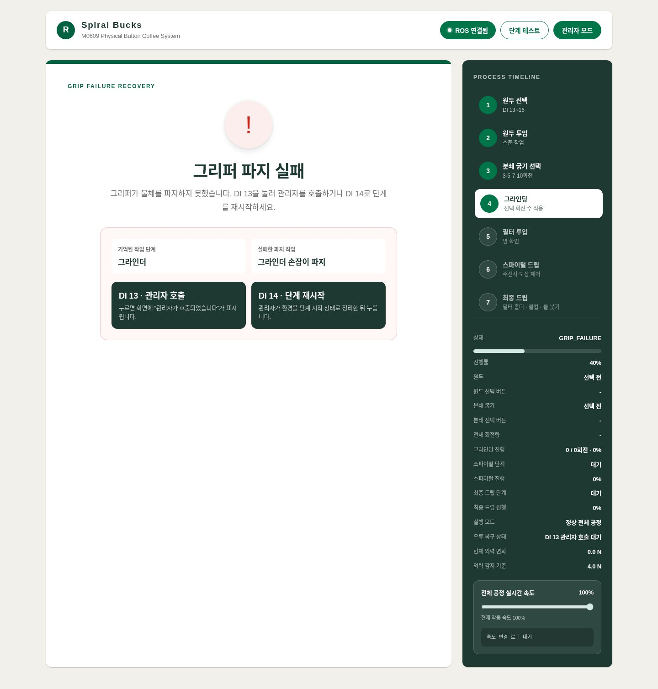
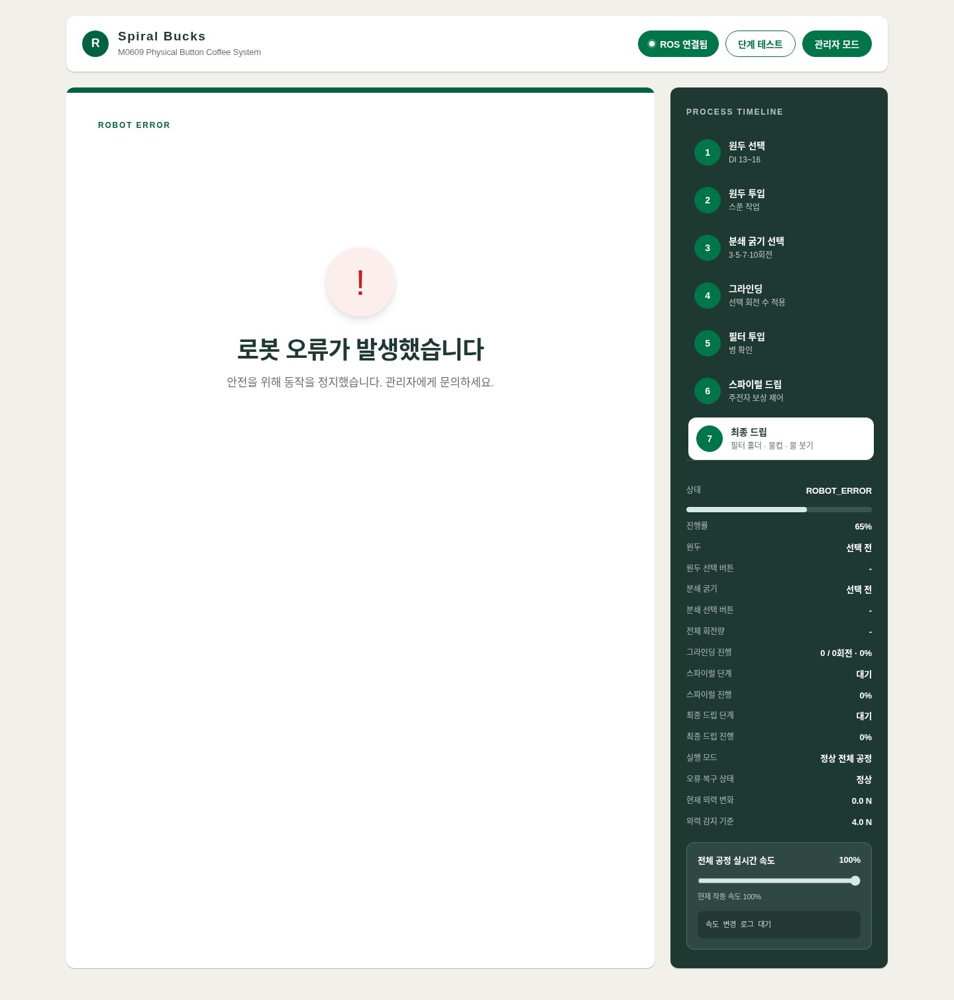
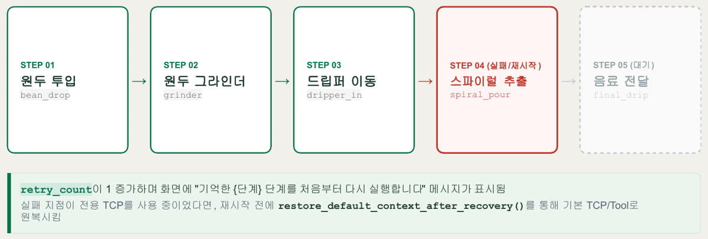
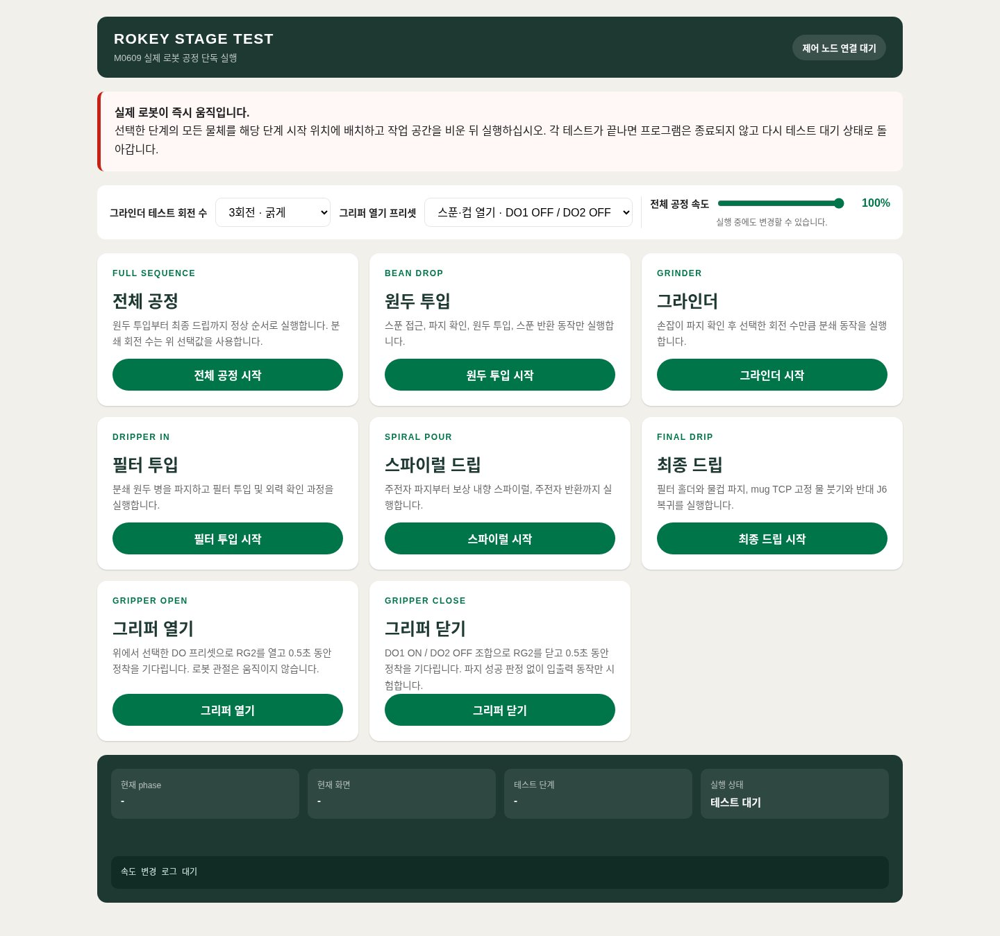
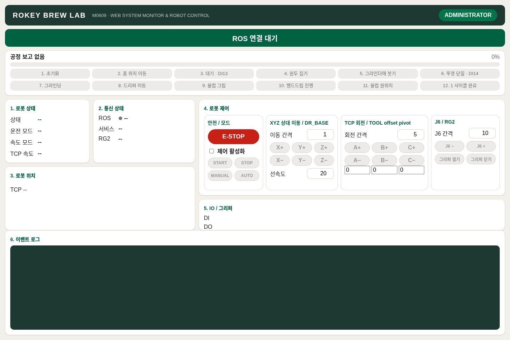
재시도 상한·확인 기록 없음
다만 최종 제출본의 이 복구에는 재시도 횟수 상한이 없고, 복구 경로가 실제로 동작하는지 자동 테스트나 실기로 확인한 기록은 남아 있지 않습니다.
이 경험을 통해 시스템이 자동으로 처리할 범위와 사람이 판단할 지점을 나누는 설계를 익혔습니다.
팀에서 일한 방식
카메라가 없어 거의 모든 좌표를 로봇을 직접 움직여 펜던트로 하나하나 교시해야 했습니다. 팀은 공정별 상대 이동과 좌표 변환으로 일일이 교시하는 부담을 줄이려 했고, 공정 단계별로 교시를 반복하며 각자 익숙해진 파트를 골라 맡았습니다.
매일 함께 작업하며 진행 상황과 코드를 공유했고, 멘토에게 기능 구현과 예외 처리에 대한 피드백을 받았습니다.
로봇을 실제로 돌리기 위한 준비는 팀이 함께 정했습니다.
- 장비·네트워크 설정
- 재교시 기준
- 실행 전 점검
그라인더를 고정할 구조물을 짧은 기간에 설치하기는 어려워, 팀은 사람이 공정에 들어가도 되는지 멘토에게 물었고 사람이 손으로 잡아도 평가에서 좋지 않게 보지는 않을 것이라는 이야기를 나눴습니다. 그래서 분쇄하는 동안 사람이 그라인더를 잡고, 로봇 그리퍼가 손잡이를 잡는 조건을 엄밀하게 정해 공정을 설계하고 구현했습니다.
짧은 개발 기간과 잦은 변동으로 작업 환경 도면을 미리 정하고 시작하지는 못했습니다. 그래도 위치가 틀어질 때를 대비해, 저는 로봇 작업 영역과 공정 위치, 그리퍼 벌림 폭 등 위치와 치수를 규격화하는 작업 환경 도면을 공정 구성을 마친 뒤 프로젝트 기간 안에 한 장으로 정리했습니다.
코드가 어떤 환경에서 동작하는지 이해하도록 돕는 문서이며, 도면 치수가 코드의 교시 좌표와 그대로 맞지는 않습니다.
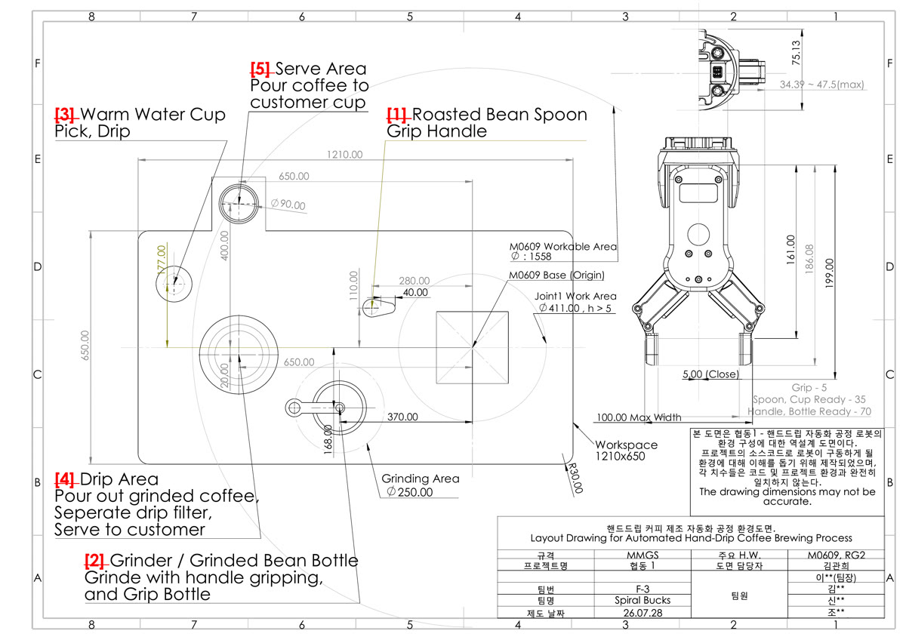
이 도면은 제가 SOLIDWORKS로 만든 3D 모델을 바탕으로 그렸습니다. 이미 꾸민 작업 환경을 보고 작업대와 공정 도구를 거꾸로 모델링(역설계)한 것이라 치수가 실제와 완전히 일치하지는 않습니다. 작업 영역과 도구 형상을 3차원으로 직접 옮긴 작업이라 함께 싣습니다.
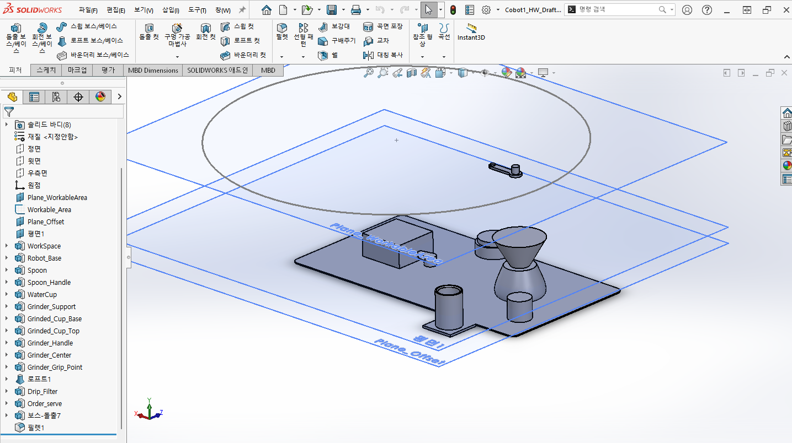
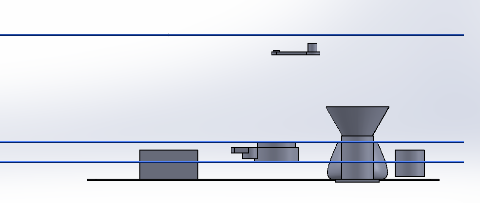
배운 점
저는 오픈소스 드라이버 코드를 읽어 판정에 쓸 신호를 찾고, 빈손일 때와 물체를 잡았을 때의 실측값으로 실물에서 동작 기준을 확인하며 소프트웨어를 실제 기기에 맞춰 구현하는 법을 배웠습니다.
기술 상세
팀 발표 자료(세부 기술): 발표 자료(PDF, 46쪽)
코드 근거
Rokey_cobot1 — 팀 최종 코드(README가 코드 구성과 작업 환경 도면을 설명합니다)